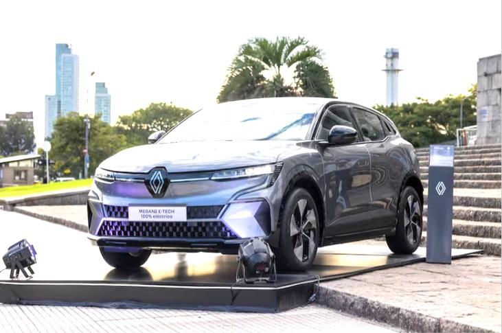

AI Generativa en la búsqueda: deja que Google haga la búsqueda por ti
En los últimos 25 años, a lo largo de muchos cambios tecnológicos, continuamos trabajando para expandir las capacidades del Buscador de Google.
Perfeccionamos meticulosamente nuestros sistemas centrales de calidad de la información para ayudar a encontrar lo mejor de la web.
Para esto, construimos una base de conocimiento con miles de millones de datos sobre personas, lugares y cosas, todo para poder obtener información confiable en un abrir y cerrar de ojos.
Leer más...

E-Tech Tour: cómo sumarse a la iniciativa que permite probar vehículos eléctricos en varias ciudades del país
La experiencia permite conocer de primera mano el Megane E-Tech 100% eléctrico, el Kwid E-Tech 100% eléctrico, y la Kangoo E-Tech 100% eléctrica, que pronto estará disponible en el mercado local. A su vez, se ofrecen test drives de Megane E-Tech 100% eléctrico y Kwid E-Tech 100% eléctrico, charlas con expertos y adquirir el merchandising de “The Originals”.Leer más...
Qué son las passkey: el método que supera a las contraseñar tradicionales en seguridad
Las contraseñas han sido importantes para nuestra seguridad en línea. Sin embargo, a pesar de su utilidad, presentan ciertas limitaciones como la dificultad para recordar sus múltiples combinaciones en distintas cuentas o su la vulnerabilidad ante los cibercriminales. En este contexto, las passkeys o claves de acceso emergen como una nueva forma de autenticación, ofreciendo una alternativa más sencilla y segura para proteger nuestra identidad online.Leer más...